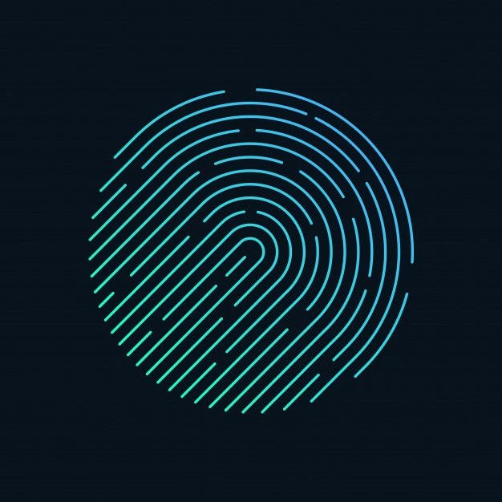
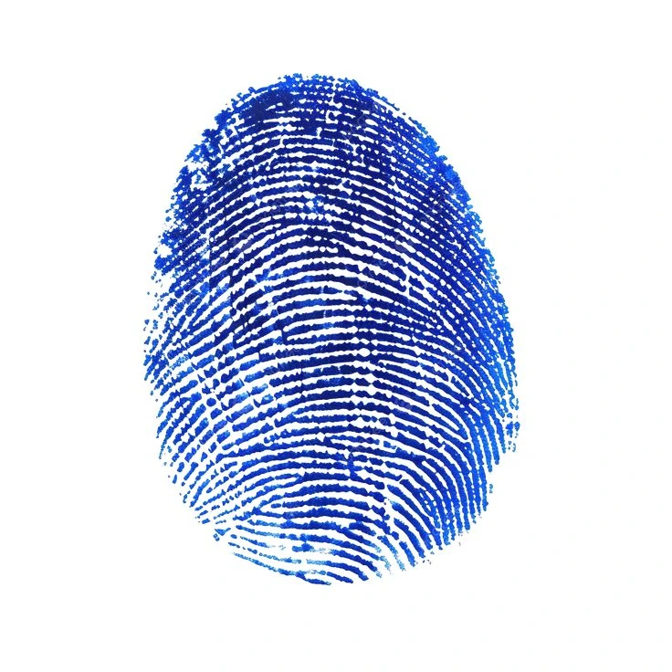
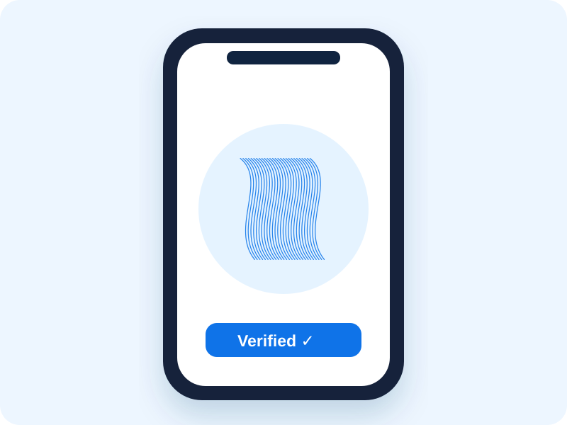

STEP 01
Capture
The sensor reads the fingerprint pattern.
UNVEILING EVERYDAY TECHNOLOGY
A fingerprint scanner first measures the ridges and valleys on your fingertip. Software then detects identifying details, builds a digital template, and compares a new scan with enrolled records. Explore every step below.
FIRST, THE SURFACE
Your fingertip has raised lines called ridges and spaces called valleys. A sensor measures the difference between them.
It starts reading the tiny surface pattern.
The ridges and valleys become an image or signal.
It finds special places where lines end or split.

THE MAIN IDEA
Here is the entire process — from touching the scanner to identifying a saved person.

STEP 01
The sensor reads the fingerprint pattern.

STEP 02
Software detects ridge endings and splits.
STEP 03
A template is linked to an ID during enrollment.
STEP 04
A new reading is checked against stored features.
THE SURPRISING PART
It searches for a matching fingerprint template. The saved record tells it which person that template belongs to.
See how data is stored →MORE THAN PHONE UNLOCKING
The same idea appears in everyday devices and workplaces.

Confirm who is unlocking the phone.

Allow entry to an authorized person.
Connect a match to an employee or student ID.
BEFORE YOU GO
Understand the most important things without reading a textbook.
All questions →No. It compares fingerprint features, then finds the name or ID linked to a saved match.
Many systems store a feature template instead of a full fingerprint picture. The exact storage method depends on the device.
Contact, rotation, dirt or a low-quality reading can hide features. The software must allow a degree of difference.